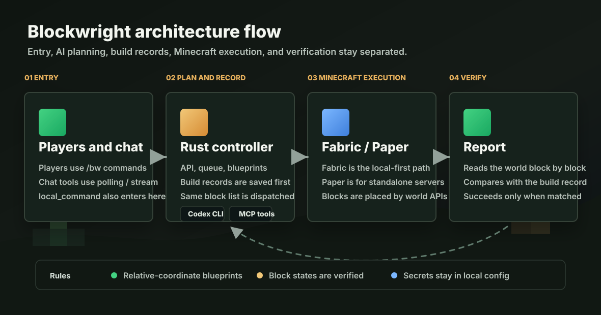

游戏内自然语言
玩家用 `/bw 给我一把钻石剑`、`/bw 帮我盖一个木屋` 直接发起请求。
HMCL / Fabric 优先，本地 controller 编排
本地优先的 Minecraft AI 建筑助手。玩家用 `/bw` 提需求，controller 调用 Codex 与 MCP 工具读真实世界状态，再让 Fabric/Paper 执行端通过服务端世界 API 放置并逐块校验。
核心能力
Blockwright 把 AI 规划留在 controller，把真正读取和修改 Minecraft 世界的动作留给 Fabric/Paper 执行端，方便本地世界先跑通闭环。
玩家用 `/bw 给我一把钻石剑`、`/bw 帮我盖一个木屋` 直接发起请求。
玩家状态、物品栏、附近方块、蓝图和构建记录通过 MCP 工具读取。
蓝图里保存相对坐标和方块状态，执行时才叠加玩家或任务原点。
执行端放置后读取世界状态，报告与构建记录一致才算成功。
快速使用
先启动 controller 的 Web 端，再安装 Fabric 模组。Paper 插件保留给独立 Paper 服务端场景。
在仓库根目录运行 ./scripts/run-web.sh，默认打开 http://127.0.0.1:8765/web。
运行 make 自动构建并安装到 HMCL 当前游戏目录，也可以用 make HMCL_DIR=... 指定。
进入世界后使用 /bw，例如建木屋、发物品、修改已有建筑；配置入口统一在 Web 设置页。
架构
这个边界让仓库适合后续扩展聊天工具、图片转蓝图、已有建筑改造和更多 MCP 查询工具。

GitHub 配置
GitHub Pages 选择 main /docs 发布；About 区域填写项目简介、Website 和 topics；Social preview 建议使用仓库里的预览图。
Deploy from a branch，Branch 选 main，Folder 选 /docs。
发布完成后把 https://mari0w.github.io/blockwright/ 写入仓库 About。
README 保留开发者快速开始、Fabric 安装、API 示例和测试命令，官网负责公开介绍。
上传 docs/assets/social-preview.png，让 GitHub 分享卡片统一展示 Blockwright 品牌。